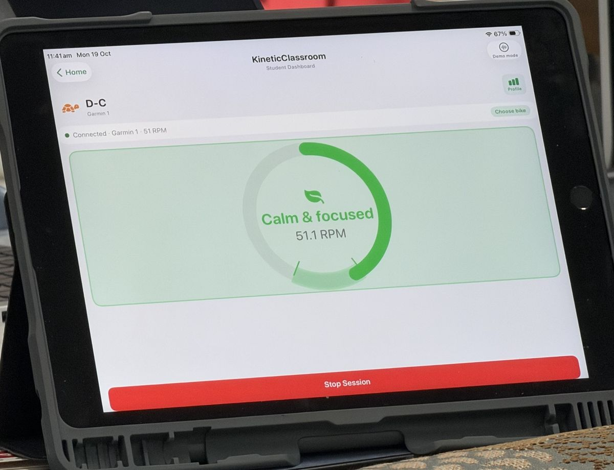
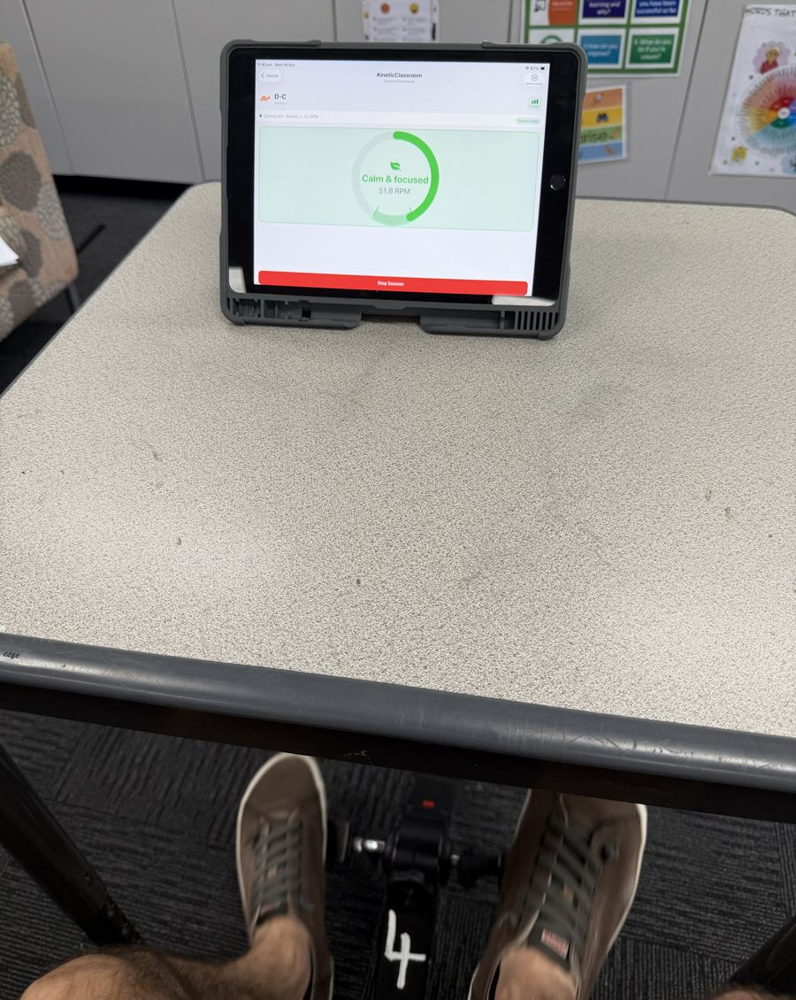
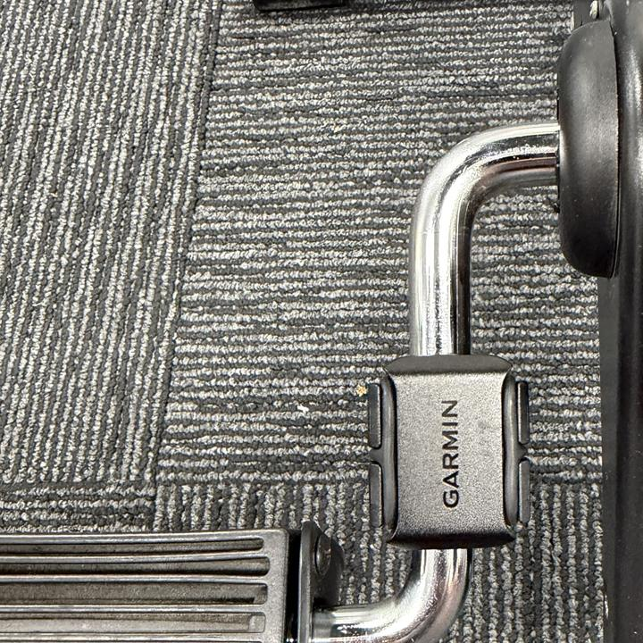

For teachers of students who need to move
An under-desk bike gives a student a quiet way to move without leaving their seat. A small sensor on the pedal sends pedalling speed to your iPad, and KineticClassroom turns it into a simple regulation status you can read at a glance.
Free on the App Store for iPad. Not a fitness app. Not a medical device.

Trialled in Brisbane classrooms — 5 students across 3 classrooms, Term 3 2026.
Built by a practising teacher — 26 years in classrooms, still teaching.
Three pieces, no logins, no IT setup. One iPad runs up to two bikes.
A standard Bluetooth cadence sensor clips onto any under-desk pedal exerciser and measures how fast the student is pedalling.
Pair each sensor to a student's initials once. The app reads both bikes at the same time.
Pedalling speed becomes a regulation zone. You notice who needs a check-in without stopping the lesson.
KineticClassroom works best as a targeted support for students who find it hard to settle — while everyone else works as normal. Each iPad runs up to two bikes at a time.
Suited to upper primary and secondary, including learning support and small-group settings.

You might think of a student who:
We'd rather you trust us than be impressed by us. Here's the honest version.
In a lab study of 24 children, those with ADHD were faster on an attention task while pedalling a desk cycle, with more activity in the brain's prefrontal cortex. Children without ADHD showed no change.
Hoy, Fenesi et al. (2024), Brain Sciences
For children with ADHD, more movement during a thinking task went with better working memory. For other children it was the reverse — which is why this is a targeted tool.
Sarver et al. (2015), Journal of Abnormal Child Psychology
Light, steady movement supports attention. Hard effort competes with thinking. The zones are set around light, sustainable pedalling, informed by this research.
McMorris & Hale (2012, 2015); Yu et al. (2021)
“It has significantly helped not only the student to stay calm and focused, but their peers as well. The teacher is able to help students learn better as disruptions are reduced.”

No accounts, no logins, no tracking. Teachers enter initials, not names. Nothing is sent to us or anyone else.
Read the privacy policyWe're working with a small number of founding schools. Let's talk about how KineticClassroom could support your students.